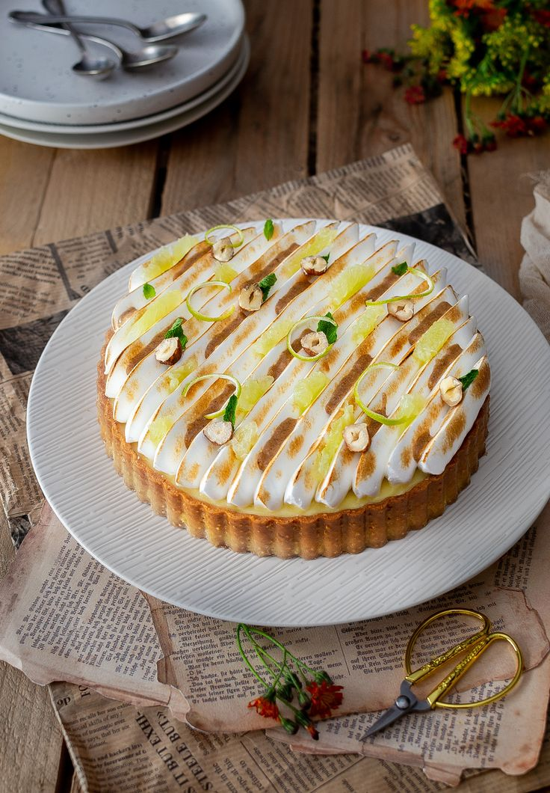

Tarte au citron meringué

Ingrédients :
- Pâte sablé :
- 250 g de farine
- 125 g de beurre doux
- 70 g de sucre
- 2 jaunes d'oeufs
- 5 cl d'eau
- 1 pincée de sel
- Crème au citron :
- 150 g de jus de citron
- 150 g de sucre
- 3 oeufs
- 150 g de beurre
- Meringue italienne :
- 250 g de sucre
- 4 blancs d'oeufs
- 10 cl d'eau
Étapes :
- Préchauffer le four a 180°C.
- Pour la pâte : ON sépare les blancs des jaunes et réserver les blancs. Fouetter les jaunes avec le sucre .
- Sabler la farine avec le beurre.
- Ajouter le mélange jaunes / sucre. Mélanger et bouler la pâte. Réservez au frigo 20 minutes.
- Abaisser la pâte et foncer un moule de 25 cm de diamètre. Faire cuire a blanc pendant 10/15 minutes. Sortir et laisser refroidir
- Pour le crème au citron : Ajouter tout les ingrédients dans une casserole et fouetter le tout. Mettre a cuire sur feu doux en mélangeant sans arrêt. Une fois cuite, réserver au frigo.
- Ajouter la crème au citron dans le fond de tarte et lisser.
- Pour la meringue : Ajouter dans un casseroles l'eau et le sucre, mettre sur le feu et faire atteindre la température de 118°C a l'aide d'un thermomètre. En parallèle, dans un batteur, mettre a tourner les blancs pour qu'ils deviennent mousseux. Une fois la température atteinte, ajouter le sirop sur les blancs et mettre le batteur vitesse maximum jusqu'à refroidissement.
- Pocher la meringue sur la tarte. Décorer à votre guise. Laisser au frais pendant au moins 1 heure. Déguster.
Vous cherchez une recette en particulier ?
Contactez-nous pour que nous l'ajoutions à notre répertoire